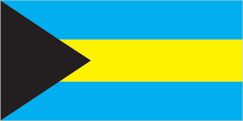
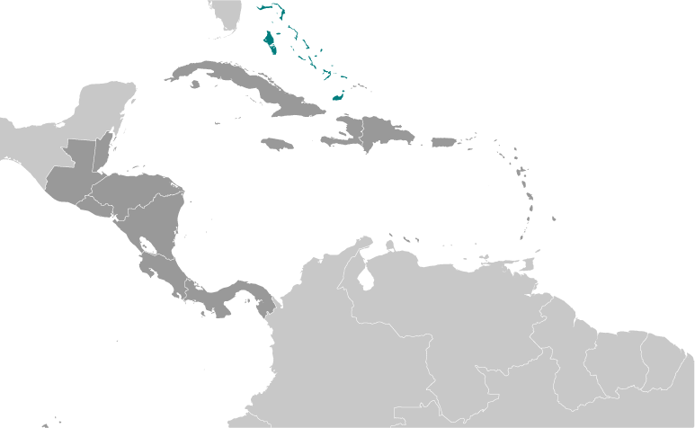

Central America and Caribbean :: BAHAMAS, THE
Introduction :: BAHAMAS, THE
-
Lucayan Indians inhabited the islands when Christopher COLUMBUS first set foot in the New World on San Salvador in 1492. British settlement of the islands began in 1647; the islands became a colony in 1783. Piracy thrived in the 17th and 18th centuries because of The Bahamas close proximity to shipping lanes. Since attaining independence from the UK in 1973, The Bahamas has prospered through tourism, international banking, and investment management. Because of its location, the country is a major transshipment point for illegal drugs, particularly shipments to the US and Europe, and its territory is used for smuggling illegal migrants into the US.
Geography :: BAHAMAS, THE
-
chain of islands in the North Atlantic Ocean, southeast of Florida, northeast of Cuba24 15 N, 76 00 WCentral America and the Caribbeantotal: 13,880 sq kmland: 10,010 sq kmwater: 3,870 sq kmcountry comparison to the world: 161slightly smaller than Connecticut0 km3,542 kmterritorial sea: 12 nmexclusive economic zone: 200 nmtropical marine; moderated by warm waters of Gulf Streamlong, flat coral formations with some low rounded hillsmean elevation: NAelevation extremes: lowest point: Atlantic Ocean 0 mhighest point: Mount Alvernia on Cat Island 64 msalt, aragonite, timber, arable landagricultural land: 1.4%arable land 0.8%; permanent crops 0.4%; permanent pasture 0.2%forest: 51.4%other: 47.2% (2011 est.)10 sq km (2012)most of the population lives in urban areas, with two-thirds living on New Providence Island where Nassau is locatedhurricanes and other tropical storms cause extensive flood and wind damagecoral reef decay; solid waste disposalparty to: Biodiversity, Climate Change, Climate Change-Kyoto Protocol, Desertification, Endangered Species, Hazardous Wastes, Law of the Sea, Ozone Layer Protection, Ship Pollution, Wetlandssigned, but not ratified: none of the selected agreementsstrategic location adjacent to US and Cuba; extensive island chain of which 30 are inhabited
People and Society :: BAHAMAS, THE
-
329,988note: estimates for this country explicitly take into account the effects of excess mortality due to AIDS; this can result in lower life expectancy, higher infant mortality, higher death rates, lower population growth rates, and changes in the distribution of population by age and sex than would otherwise be expected (July 2017 est.)country comparison to the world: 179noun: Bahamian(s)adjective: Bahamianblack 90.6%, white 4.7%, black and white 2.1%, other 1.9%, unspecified 0.7% (2010 est.)English (official), Creole (among Haitian immigrants)Protestant 69.9% (includes Baptist 34.9%, Anglican 13.7%, Pentecostal 8.9% Seventh Day Adventist 4.4%, Methodist 3.6%, Church of God 1.9%, Brethren 1.6%), Roman Catholic 12%, other Christian 13% (includes Jehovah's Witness 1.1%), other 0.6%, none 1.9%, unspecified 2.6% (2010 est.)0-14 years: 22.55% (male 37,760/female 36,667)15-24 years: 16.4% (male 27,415/female 26,703)25-54 years: 44.14% (male 73,016/female 72,626)55-64 years: 9.16% (male 13,647/female 16,567)65 years and over: 7.75% (male 9,843/female 15,744) (2017 est.)total dependency ratio: 40.8youth dependency ratio: 29.1elderly dependency ratio: 11.7potential support ratio: 8.5 (2015 est.)total: 32 yearsmale: 30.9 yearsfemale: 33.2 years (2017 est.)country comparison to the world: 1000.81% (2017 est.)country comparison to the world: 12915.3 births/1,000 population (2017 est.)country comparison to the world: 1257.2 deaths/1,000 population (2017 est.)country comparison to the world: 1250 migrant(s)/1,000 population (2017 est.)country comparison to the world: 73most of the population lives in urban areas, with two-thirds living on New Providence Island where Nassau is locatedurban population: 83% of total population (2017)rate of urbanization: 1.21% annual rate of change (2015-20 est.)NASSAU (capital) 267,000 (2014)at birth: 1.03 male(s)/female0-14 years: 1.03 male(s)/female15-24 years: 1.03 male(s)/female25-54 years: 1 male(s)/female55-64 years: 0.81 male(s)/female65 years and over: 0.62 male(s)/femaletotal population: 0.96 male(s)/female (2016 est.)80 deaths/100,000 live births (2015 est.)country comparison to the world: 80total: 11.3 deaths/1,000 live birthsmale: 11.4 deaths/1,000 live birthsfemale: 11.3 deaths/1,000 live births (2017 est.)country comparison to the world: 127total population: 72.6 yearsmale: 70.2 yearsfemale: 75.1 years (2017 est.)country comparison to the world: 1451.94 children born/woman (2017 est.)country comparison to the world: 1287.7% of GDP (2014)country comparison to the world: 612.72 physicians/1,000 population (2008)2.9 beds/1,000 population (2011)improved:urban: 98.4% of populationrural: 98.4% of populationtotal: 98.4% of populationunimproved:urban: 1.6% of populationrural: 1.6% of populationtotal: 1.6% of population (2015 est.)improved:urban: 92% of populationrural: 92% of populationtotal: 92% of populationunimproved:urban: 8% of populationrural: 8% of populationtotal: 8% of population (2015 est.)3.3% (2016 est.)country comparison to the world: 178,200 (2016 est.)country comparison to the world: 101NA31.6% (2016)country comparison to the world: 21NAtotal: 30.8%male: 29.6%female: 32.2% (2012 est.)country comparison to the world: 24
Government :: BAHAMAS, THE
-
conventional long form: Commonwealth of The Bahamasconventional short form: The Bahamasetymology: name derives from the Spanish "baha mar," meaning "shallow sea," which describes the shallow waters of the Bahama Banksparliamentary democracy (Parliament) under a constitutional monarchy; a Commonwealth realmname: Nassaugeographic coordinates: 25 05 N, 77 21 Wtime difference: UTC-5 (same time as Washington, DC, during Standard Time)daylight saving time: +1hr, begins second Sunday in March; ends first Sunday in November31 districts; Acklins Islands, Berry Islands, Bimini, Black Point, Cat Island, Central Abaco, Central Andros, Central Eleuthera, City of Freeport, Crooked Island and Long Cay, East Grand Bahama, Exuma, Grand Cay, Harbour Island, Hope Town, Inagua, Long Island, Mangrove Cay, Mayaguana, Moore's Island, North Abaco, North Andros, North Eleuthera, Ragged Island, Rum Cay, San Salvador, South Abaco, South Andros, South Eleuthera, Spanish Wells, West Grand Bahama10 July 1973 (from the UK)Independence Day, 10 July (1973)previous 1964 (preindependence); latest adopted 20 June 1973, effective 10 July 1973; amended many times, last in 2016 (2016)common law system based on the English modelhas not submitted an ICJ jurisdiction declaration; non-party state to the ICCtcitizenship by birth: nocitizenship by descent only: at least one parent must be a citizen of The Bahamasdual citizenship recognized: noresidency requirement for naturalization: 6-9 years18 years of age; universalchief of state: Queen ELIZABETH II (since 6 February 1952); represented by Governor General Dame Marguerite PINDLING (since 8 July 2014)head of government: Prime Minister Hubert MINNIS (since 11 May 2017)cabinet: Cabinet appointed by governor general on recommendation of prime ministerelections/appointments: the monarchy is hereditary; governor general appointed by the monarch; following legislative elections, the leader of the majority party or majority coalition usually appointed prime minister by the governor general; the prime minister recommends the deputy prime ministerdescription: bicameral Parliament consists of the Senate (16 seats; members appointed by the governor general upon the advice of the prime minister and the opposition leader to serve 5-year terms) and the House of Assembly (39 seats; members directly elected in single-seat constituencies by simple majority vote to serve 5-year terms); note - the government may dissolve the parliament and call elections at any timeelections: last held on 10 May 2017 (next to be held by May 2022)election results: percent of vote by party - FNM 57%, PLP 36.9%, other 6.1%; seats by party - FNM 35, PLP 4highest resident court(s): Court of Appeal (consists of the court president and 4 justices, organized in 3-member panels); Supreme Court (consists of the chief justice and a maximum of 11 and a minimum of 2 justices)note: as of 2008, the Bahamas was not a party to the agreement establishing the Caribbean Court of Justice as the highest appellate court for the 15-member Caribbean Community (CARICOM); the Judicial Committee of the Privy Council (in London) serves as the final court of appeal for The Bahamasjudge selection and term of office: Court of Appeal president and Supreme Court chief justice appointed by the governor-general on the advice of the prime minister after consultation with the leader of the opposition party; other Court of Appeal and Supreme Court justices appointed by the governor general upon recommendation of the Judicial and Legal Services Commission, a 5-member body headed by the chief justice; Court of Appeal justices appointed for life with mandatory retirement normally at age 68 but can be extended until age 70; Supreme Court justices appointed for life with mandatory retirement normally at age 65 but can be extended until age 67subordinate courts: Industrial Tribunal; Stipendiary and Magistrates' Courts; Family Island AdministratorsDemocratic National Alliance or DNA [Branville MCCARTNEY]Free National Movement or FNM [Hubert MINNIS]Progressive Liberal Party or PLP [Philip "Brave" DAVIS]Friends of the Environment [Wynsome FERGUSON]other: trade unionsACP, AOSIS, C, Caricom, CDB, CELAC, FAO, G-77, IADB, IAEA, IBRD, ICAO, ICC (NGOs), ICRM, IDA, IFAD, IFC, IFRCS, ILO, IMF, IMO, IMSO, Interpol, IOC, IOM, ISO (correspondent), ITSO, ITU, LAES, MIGA, NAM, OAS, OPANAL, OPCW, Petrocaribe, UN, UNCTAD, UNESCO, UNIDO, UNWTO, UPU, WCO, WHO, WIPO, WMO, WTO (observer)chief of mission: Ambassador Dr. Eugene Glenwood NEWRY (since 3 December 2013)chancery: 2220 Massachusetts Avenue NW, Washington, DC 20008telephone: [1] (202) 319-2660FAX: [1] (202) 319-2668consulate(s) general: Atlanta, Miami, New Yorkchief of mission: Ambassador (vacant); Charge d' Affaires Lisa A. JOHNSON (since 9 July 2014)embassy: 42 Queen Street, Nassau, New Providencemailing address: local or express mail address: P. O. Box N-8197, Nassau; US Department of State, 3370 Nassau Place, Washington, DC 20521-3370telephone: [1] (242) 322-1181, 328-2206 (after hours)FAX: [1] (242) 356-7174three equal horizontal bands of aquamarine (top), gold, and aquamarine, with a black equilateral triangle based on the hoist side; the band colors represent the golden beaches of the islands surrounded by the aquamarine sea; black represents the vigor and force of a united people, while the pointing triangle indicates the enterprise and determination of the Bahamian people to develop the rich resources of land and seablue marlin, flamingo, Yellow Elder flower; national colors: aquamarine, yellow, blackname: "March On, Bahamaland!"lyrics/music: Timothy GIBSONnote: adopted 1973; as a Commonwealth country, in addition to the national anthem, "God Save the Queen" serves as the royal anthem (see United Kingdom)
Economy :: BAHAMAS, THE
-
The Bahamas has the second highest per capital GDP in the English-speaking Caribbean with an economy heavily dependent on tourism and international banking. Tourism accounts for approximately 75-80% of GDP and directly or indirectly employs half of the archipelago's labor force. Financial services constitute the second-most important sector of the Bahamian economy, accounting for about 15% of GDP. Manufacturing and agriculture combined contribute less than 7% of GDP and show little growth, despite government incentives aimed at those sectors. On January 1, 2015, the Government introduced a 7.5% Value Added Tax (VAT) on most goods and services, a measure designed to strengthen the fiscal balance sheet. In August 2016, Moody’s downgraded the Bahamas’ bond and issue ratings to Baa3 from Baa2 with a stable outlook, maintaining that rating in its February 2017 review. In December 2016, S&P downgraded the country to BB+ (speculative grade) from BBB- (investment grade) with a stable outlook based on projections of slow economic growth and the pace of debt accumulation. The Bahamas is the only country in the Western Hemisphere that is not a member of the World Trade Organization.$9.017 billion (2016 est.)$8.926 billion (2015 est.)$8.98 billion (2014 est.)note: data are in 2016 dollarscountry comparison to the world: 160$8.717 billion (2016 est.)-0.3% (2016 est.)-1.7% (2015 est.)-0.5% (2014 est.)country comparison to the world: 192$24,500 (2016 est.)$24,800 (2015 est.)$25,500 (2014 est.)note: data are in 2016 dollarscountry comparison to the world: 7913.4% of GDP (2016 est.)13.6% of GDP (2015 est.)9.3% of GDP (2014 est.)country comparison to the world: 125household consumption: 66.1%government consumption: 16.8%investment in fixed capital: 26.8%investment in inventories: 1%exports of goods and services: 37.1%imports of goods and services: -47.9% (2016 est.)agriculture: 2.2%industry: 7.6%services: 90.1% (2016 est.)citrus, vegetables; poultrytourism, banking, oil bunkering, maritime industries, transshipment and logistics, salt, aragonite, pharmaceuticals1.5% (2016 est.)country comparison to the world: 129196,900 (2013 est.)country comparison to the world: 172agriculture: 3%industry: 11%tourism: 49%other services: 37% (2011 est.)12.2% (2016 est.)15.8% (2013 est.)country comparison to the world: 1689.3% (2010 est.)lowest 10%: 1%highest 10%: 22% (2007 est.)revenues: $2 billionexpenditures: $2.5 billion (2016 est.)22.4% of GDP (2016 est.)country comparison to the world: 133-5.6% of GDP (2016 est.)country comparison to the world: 16466.9% of GDP (2016 est.)64.5% of GDP (2015 est.)country comparison to the world: 561 July - 30 June0.8% (2016 est.)1.9% (2015 est.)country comparison to the world: 354.5% (1 January 2014)4.5% (31 December 2012)country comparison to the world: 834.8% (31 December 2016 est.)4.75% (31 December 2015 est.)country comparison to the world: 146$2.461 billion (31 December 2016 est.)$2.087 billion (31 December 2015 est.)country comparison to the world: 122$6.622 billion (31 December 2016 est.)$6.239 billion (31 December 2015 est.)country comparison to the world: 117$9.1 billion (31 December 2016 est.)$8.922 billion (31 December 2015 est.)country comparison to the world: 110$2.78 billion (31 December 2012 est.)country comparison to the world: 97$-1.126 billion (2016 est.)$-1.203 billion (2015 est.)country comparison to the world: 129$444.3 million (2016 est.)$520.6 million (2015 est.)country comparison to the world: 175Rock lobster, aragonite, crude salt, polystyrene productsUS 53.4%, Namibia 31.4% (2016)$2.594 billion (2016 est.)$2.954 billion (2015 est.)country comparison to the world: 150machinery and transport equipment, manufactures, chemicals, mineral fuels; food and live animalsUS 81.8% (2016)$1.002 billion (31 December 2016 est.)$895.5 million (31 December 2015 est.)country comparison to the world: 124$17.56 billion (31 December 2013 est.)$16.35 billion (31 December 2012 est.)country comparison to the world: 96Bahamian dollars (BSD) per US dollar -1 (2016 est.)1 (2015 est.)1 (2014 est.)1 (2013 est.)1 (2012 est.)
Energy :: BAHAMAS, THE
-
electrification - total population: 100% (2016)1.807 billion kWh (2015 est.)country comparison to the world: 1411.681 billion kWh (2015 est.)country comparison to the world: 1470 kWh (2016 est.)country comparison to the world: 1060 kWh (2016 est.)country comparison to the world: 124577,000 kW (2015 est.)country comparison to the world: 14199.8% of total installed capacity (2015 est.)country comparison to the world: 260% of total installed capacity (2015 est.)country comparison to the world: 490% of total installed capacity (2015 est.)country comparison to the world: 1640.2% of total installed capacity (2015 est.)country comparison to the world: 1610 bbl/day (2016 est.)country comparison to the world: 1110 bbl/day (2014 est.)country comparison to the world: 950 bbl/day (2014 est.)country comparison to the world: 990 bbl (1 January 2017 es)country comparison to the world: 1110 bbl/day (2014 est.)country comparison to the world: 12024,000 bbl/day (2015 est.)country comparison to the world: 130922.7 bbl/day (2014 est.)country comparison to the world: 10826,330 bbl/day (2014 est.)country comparison to the world: 1050 cu m (2013 est.)country comparison to the world: 1090 cu m (2013 est.)country comparison to the world: 1580 cu m (2013 est.)country comparison to the world: 680 cu m (2013 est.)country comparison to the world: 910 cu m (1 January 2009 es)country comparison to the world: 1164.1 million Mt (2013 est.)country comparison to the world: 132
Communications :: BAHAMAS, THE
-
total subscriptions: 121,088subscriptions per 100 inhabitants: 37 (July 2016 est.)country comparison to the world: 140total: 360,200subscriptions per 100 inhabitants: 110 (July 2016 est.)country comparison to the world: 178general assessment: modern facilitiesdomestic: totally automatic system; highly developed; the Bahamas Domestic Submarine Network links all of the major islands; Bahamas Telecommunications Company (BTC) privatized in 2011, but the government reacquired 51% share in 2014international: country code - 1-242; landing point for the Americas Region Caribbean Ring System (ARCOS-1) and two additional fiber-optic submarine cables that provide links to South and Central America, parts of the Caribbean, and the US; satellite earth stations - 2 (2017)The Bahamas has 4 major TV providers that provide service to all major islands in the archipelago; 1 TV station is operated by government-owned, commercially run Broadcasting Corporation of the Bahamas (BCB) and competes freely with 3 privately owned TV stations; multi-channel cable TV subscription service is widely available; there are 31 licensed broadcast (radio) service providers, 28 are privately owned FM radio stations operating on New Providence, Grand Bahama Island, Abaco Island, and on smaller islands in the country; the BCB operates a multi-channel radio broadcasting network that has national coverage; the sector is regulated by the Utilities Regulation and Competition Authority (2017).bstotal: 261,853percent of population: 80.0% (July 2016 est.)country comparison to the world: 151
Transportation :: BAHAMAS, THE
-
number of registered air carriers: 4inventory of registered aircraft operated by air carriers: 16annual passenger traffic on registered air carriers: 587,516annual freight traffic on registered air carriers: 172,730 mt-km (2015)C6 (2016)61 (2013)country comparison to the world: 80total: 24over 3,047 m: 22,438 to 3,047 m: 21,524 to 2,437 m: 13914 to 1,523 m: 7 (2017)total: 371,524 to 2,437 m: 4914 to 1,523 m: 16under 914 m: 17 (2013)1 (2013)total: 2,700 kmpaved: 1,620 kmunpaved: 1,080 km (2011)country comparison to the world: 170total: 1,160by type: barge carrier 1, bulk carrier 238, cargo 170, carrier 2, chemical tanker 87, combination ore/oil 8, container 57, liquefied gas 71, passenger 102, passenger/cargo 26, petroleum tanker 225, refrigerated cargo 97, roll on/roll off 13, specialized tanker 2, vehicle carrier 61foreign-owned: 1,069 (Angola 6, Australia 1, Belgium 6, Bermuda 15, Brazil 1, Canada 96, Croatia 1, Cyprus 23, Denmark 69, Finland 8, France 15, Germany 30, Greece 225, Guernsey 6, Hong Kong 3, Indonesia 2, Ireland 3, Italy 1, Japan 88, Jordan 2, Kuwait 1, Malaysia 13, Monaco 8, Montenegro 2, Netherlands 23, Nigeria 2, Norway 186, Poland 34, Saudi Arabia 16, Singapore 7, South Korea 1, Spain 6, Sweden 11, Switzerland 1, Thailand 4, Turkey 3, UAE 23, UK 18, US 109)registered in other countries: 6 (Panama 6) (2010)country comparison to the world: 10major seaport(s): Freeport, Nassau, South Riding Pointcontainer port(s) (TEUs): Freeport (1,116,272)(2011)cruise port(s): Nassau
Military and Security :: BAHAMAS, THE
-
Royal Bahamas Defense Force: Land Force, Navy, Air Wing (2011)18 years of age for voluntary male and female service; no conscription (2012)
Transnational Issues :: BAHAMAS, THE
-
disagrees with the US on the alignment of the northern axis of a potential maritime boundarystateless persons: 11 (2016)transshipment point for cocaine and marijuana bound for US and Europe; offshore financial center